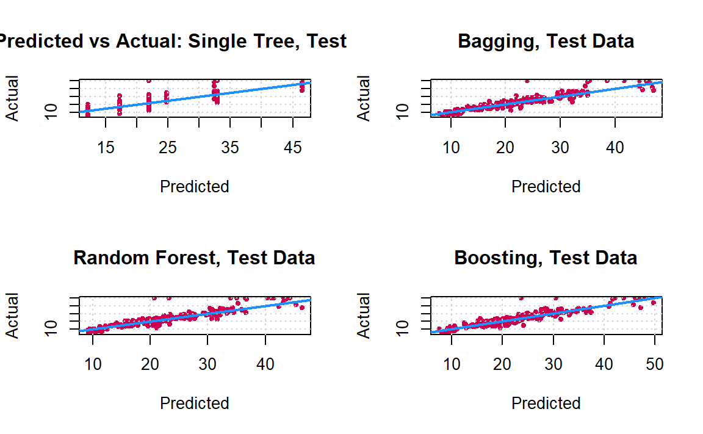
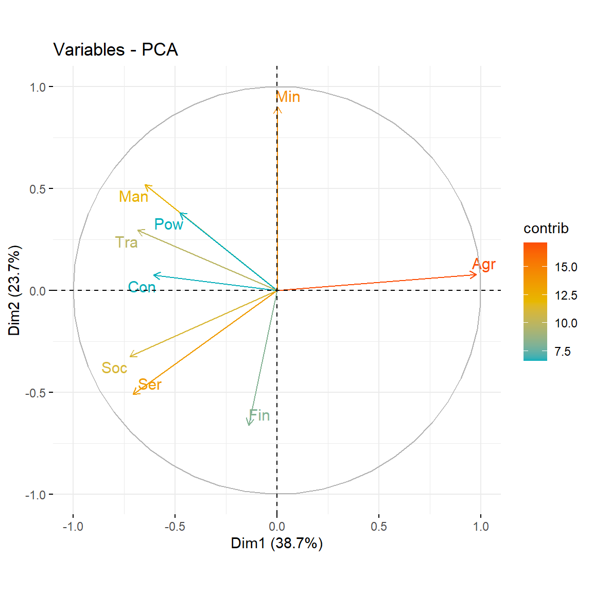

7 Kmeans & Hierarchical Clustering
7.1 Unsupervised Learning
Previously we considered supervised learning methods such as regression and classification, where we typically have access to a set of \(p\) features \(X_1,X_2,\ldots,X_p\), measured on \(n\) observations, and a response \(Y\) also measured on those same \(n\) observations (what we call labels). The goal was then to predict \(Y\) using \(X_1,X_2,\ldots,X_p\). From now on we will instead focus on unsupervised learning, a set of statistical tools where we have only a set of features \(X_1,X_2,\ldots,X_p\) measured on \(n\) observations. We are not interested in prediction, because we do not have an associated response variable \(Y\). Rather, the goal is to discover interesting things about the measurements on \(X_1,X_2,\ldots,X_p\). Is there an informative way to visualize the data? Can we discover subgroups among the variables or among the observations? Unsupervised learning refers to a diverse set of techniques for answering questions such as these. In this chapter, we will focus on a particular type of unsupervised learning: Principal Components Analysis (PCA), a tool used for data visualization or data pre-processing before supervised techniques are applied. In the next chapters, we will talk about clustering, another particular type of unsupervised learning. Clustering is a broad class of methods for discovering unknown subgroups in data.
Unsupervised learning is often much more challenging than supervised learning. The exercise tends to be more subjective, and there is no simple goal for the analysis, such as prediction of a response. Unsupervised learning is often performed as part of an exploratory data analysis. It is hard to assess the results obtained from unsupervised learning methods. If we fit a predictive model using a supervised learning technique, then it is possible to check our work by seeing how well our model predicts the response \(Y\) on observations not used in fitting the model. But in unsupervised learning, there is no way to check our work because we don’t know the true answer: the problem is unsupervised.
7.2 Clustering
Clustering (or Cluster analysis) is the collection of techniques designed to find subgroups or clusters in a dataset of variables \(X_1,\ldots,X_p\). Depending on the similarities between the observations, these are partitioned in homogeneous groups as separated as possible between them. Clustering methods can be classified into these main categories:
- Partition methods: Given a fixed number of cluster \(k\), these methods aim to assign each observation of \(X_1,\ldots,X_p\) to a unique cluster, in such a way that the within-cluster variation is as small as possible (the clusters are as homogeneous as possible) while the between cluster variation is as large as possible (the clusters are as separated as possible).
- Distribution models: These clustering models are based on the notion of how probable is it that all data points in the cluster belong to the same distribution (For example: Normal, Poisson, etc..). A popular example of these models is Expectation-maximization algorithm using multivariate Normal distributions.
- Hierarchical methods: These methods construct a hierarchy for the observations in terms of their similitudes. This results in a tree-based representation of the data in terms of a dendogram, which depicts how the observations are clustered at different levels – from the smallest groups of one element to the largest representing the whole dataset.
- Density Models: These models search the data space for areas of varied density of data points in the data space. It isolates various different density regions and assign the data points within these regions in the same cluster. Popular examples of density models are DBSCAN and OPTICS.

Figure 7.1: Performance comparison of different clustering methods on different datasets
In this chapter we will see the basics of the partition methods, and one of the most well-known clustering techniques, namely \(k\)-means clustering.
7.3 Introduction
Clustering (or Cluster analysis) is the process of partitioning a set of data objects (observations) into subsets. Each subset is a cluster, such that objects in a cluster are similar to one another, yet dissimilar to objects in other clusters.
The set of clusters resulting from a cluster analysis can be referred to as a clustering. In this context, different clustering methods may generate different clusterings on the same data set. The partitioning is not performed by humans, but by the clustering algorithm. Hence, clustering is useful in that it can lead to the discovery of previously unknown groups within the data.
Different clustering methods may generate different clusterings on the same data set.
Example: Imagine a Director of Customer Relationships at an Electronics magazine, and he has five managers working for him. He would like to organize all the company’s customers into five groups so that each group can be assigned to a different manager. Strategically, he would like that the customers in each group are as similar as possible. Moreover, two given customers having very different business patterns should not be placed in the same group. His intention behind this business strategy is to develop customer relationship campaigns that specifically target each group, based on common features shared by the customers per group. Unlike in classification, the class label of each customer is unknown. He needs to discover these groupings. Given a large number of customers and many attributes describing customer profiles, it can be very costly or even infeasible to have a human study the data and manually come up with a way to partition the customers into strategic groups. He needs a clustering tool to help.
Clustering has been widely used in many applications such as business intelligence, image pattern recognition, Web search, biology, and security. In business intelligence, clustering can be used to organize a large number of customers into groups, where customers within a group share strong similar characteristics. In image recognition, clustering can be used to discover clusters or “subclasses” in handwritten character recognition systems. Clustering has also found many applications in Web search. For example, a keyword search may often return a very large number of hits (i.e., pages relevant to the search) due to the extremely large number of web pages. Clustering can be used to organize the search results into groups and present the results in a concise and easily accessible way. Moreover, clustering techniques have been developed to cluster documents into topics (remember the google news example?), which are commonly used in information retrieval practice.
Clustering is also called data segmentation in some applications because clustering partitions large data sets into groups according to their similarity.
As a branch of statistics, clustering has been extensively studied, with the main focus on distance-based cluster analysis. Clustering tools were proposed like \(k\)-means, fuzzy \(c\)-means, and several other methods.
Many clustering algorithms have been introduced in the literature. Since clusters can formally be seen as subsets of the data set, one possible classification of clustering methods can be according to whether the subsets are fuzzy or crisp (hard).
Hard clustering
Hard clustering methods are based on classical set theory, and require that an object either does or does not belong to a cluster. Hard clustering means partitioning the data into a specified number of mutually exclusive subsets. The most common hard clustering method is \(k\)-means.
Fuzzy clustering
Fuzzy clustering methods, however, allow the objects to belong to several clusters simultaneously, with different degrees of membership. In many situations, fuzzy clustering is more natural than hard clustering. The most known technique of fuzzy clustering is the fuzzy \(c\)-means.
7.4 \(k\)-Means
If you have ever watched a group of tourists with a couple of tour guides who hold umbrellas up so that everybody can see them and follow them, then you have seen a dynamic version of the \(k\)-means algorithm. \(k\)-means is even simpler, because the data (playing the part of the tourists) does not move, only the tour guides move.
Suppose that we want to divide our input data into \(K\) categories, where we know the value of \(K\). We allocate \(K\) cluster centres (also called prototypes or centroids) to our input space, and we would like to position these centres so that there is one cluster centre in the middle of each cluster. However, we don’t know where the clusters are, let alone where their ‘middle’ is, so we need an algorithm that will find them. Learning algorithms generally try to minimize some sort of error, so we need to think of an error criterion that describes this aim. There are two things that we need to define:
A distance measure: In order to talk about distances between points, we need some way to measure distances. It is often the normal Euclidean distance, but there are other alternatives like Manhattan distance, Correlation distance, Chessboard distance and other.
The Euclidean distance: Let \(x=(x_1,x_2)\) and \(y=(y_1,y_2)\) two observations in a two-dimensional space. The Euclidean distance \(d_{x,y}\) between \(x\) and \(y\) is
\[\begin{align*} d_{x,y}^2 &= (x_1-y_1)^2+(x_2 - y_2)^2 \\ d_{x,y} &= \sqrt{(x_1-y_1)^2+(x_2 - y_2)^2} \end{align*}\]
The mean average: Once we have a distance measure, we can compute the central point of a set of data points, which is the mean average. Actually, this is only true in Euclidean space, which is the one we are used to, where everything is nice and flat.
We can now think about a suitable way of positioning the cluster centres: we compute the mean point of each cluster, \(\textbf{v}_k\), \(i=1,\ldots,K\), and put the cluster centre there. This is equivalent to minimizing the Euclidean distance (which is the sum-of-squares error) from each data point to its cluster centre. Then we decide which points belong to which clusters by associating each point with the cluster centre that it is closest to. This changes as the algorithm iterates. We start by positioning the cluster centres randomly though the input space, since we don’t know where to put them, and we update their positions according to the data. We decide which cluster each data point belongs to by computing the distance between each data point and all of the cluster centres, and assigning it to the cluster that is the closest. For all the point that are assigned to a cluster, we then compute the mean of them, and move the cluster centre to that place. We iterate the algorithm until the cluster centres stop moving.
It is convenient at this point to define some notation to describe the assignment of data points to clusters. For each data point \(x_i\), we introduce a corresponding set of binary indicator variables \(u_{ki} \in {0,1}\), where \(k=1,\ldots,K\) describing which of the \(K\) clusters the data point \(x_i\) is assigned to, so that if data point \(x_i\) is assigned to cluster \(k\) then \(u_{ki}= 1\), and \(u_{kj}= 0\) for \(j \neq i\). This is known as the \(1\)-of-\(K\) coding scheme. We can then define an objective function (and sometimes called a distortion measure), given by
\[J= \sum_{i=1}^{N} \sum_{i=k=1}^{K} u_{ki} \| x_{i}- \mathbf{v}_{k} \|^2\]
which represents the sum of the squares of the distances of each data point to its assigned vector \(\mathbf{v}_{k}\). The goal is to find values for the \(\{u_{ki}\}\) and the \(\{\mathbf{v}_{k}\}\) so as to minimize \(J\). We can do this through an iterative procedure in which each iteration involves two successive steps corresponding to successive optimizations with respect to the \(u_{ki}\) and the \(\mathbf{v}_{k}\). The algorithm of \(k\)-means is described in the following algorithm:
| The \(k\)-means algorithm | |
|---|---|
| Data: | \(\textbf{X}=\{x_{ij}, i=1,\ldots,n, j=1,\ldots,p\}\) |
| Result: | Cluster centres (Prototypes) |
| Initialization: |
|
| Learning: repeat | for each data point \(x_i\) do
for each prototype do
Until the prototypes stop moving. |
The \(k\)-means algorithm produces
- A final estimate of cluster centroids (i.e. their coordinates).
- An assignment of each point to their respective cluster.
The denominator in the expression \(\mathbf{v}_k = \frac{\sum_i u_{ki} x_i}{\sum_i u_{ki}}\) is equal to the number of points assigned to cluster \(k\), and so this result has a simple interpretation, namely set \(\mathbf{v}_k\) equal to the mean of all of the data points \(x_i\) assigned to cluster \(k\). For this reason, the procedure is known as the \(k\)-means algorithm.
The two phases of re-assigning data points to clusters and re-computing the cluster means are repeated in turn until there is no further change in the assignments (or until some maximum number of iterations is exceeded). Because each phase reduces the value of the objective function \(J\), convergence of the algorithm is assured. However, it may converge to a local rather than global minimum of \(J\).
The \(k\)-means algorithm is illustrated using the Old Faithful data set13 in following figure.
![Illustration of the $k$-means algorithm using the re-scaled Old Faithful data set, where $k=2$. We can see how the $k$-means algorithm works. (a) The first thing $k$-means has to do is assign an initial set of centroids. (b) The next stage in the algorithm assigns every point in the dataset to the closest centroid. (c) The next stage is the re-calculate the centroids based on the new cluster assignments of the data points. (d) Now we have completed one full cycle of the algorithm we can continue and re-assign points to their (new) closest cluster centroid. (e) And we can update the centroid positions one more time based on the re-assigned points. (g)(h)(f) The algorithm stops when we obtain the same results in consecutive iterations.](img/kmeans.png)
Figure 7.2: Illustration of the \(k\)-means algorithm using the re-scaled Old Faithful data set, where \(k=2\). We can see how the \(k\)-means algorithm works. (a) The first thing \(k\)-means has to do is assign an initial set of centroids. (b) The next stage in the algorithm assigns every point in the dataset to the closest centroid. (c) The next stage is the re-calculate the centroids based on the new cluster assignments of the data points. (d) Now we have completed one full cycle of the algorithm we can continue and re-assign points to their (new) closest cluster centroid. (e) And we can update the centroid positions one more time based on the re-assigned points. (g)(h)(f) The algorithm stops when we obtain the same results in consecutive iterations.
The \(k\)-means algorithm is illustrated using the Iris data set in following interactive figure14. (Try to modify the X and Y variables and the numbers of chosen clusters and see the result)
7.4.1 \(k\)-means in
We will use an example with simulated data to demonstrate how the \(k\)-means algorithm works. Here we simulate some data from three clusters and plot the dataset below.
set.seed(1234)
x <- rnorm(12,mean=rep(1:3,each=4),sd=0.2)
y <- rnorm(12,mean=rep(c(1,2,1),each=4),sd=0.2)
plot(x,y,col="blue",pch=19,cex=2)
text(x+0.05,y+0.05,labels=as.character(1:12))Figure 7.3: Simulated dataset
The kmeans() function in R implements the \(k\)-means algorithm and can be found in the stats package, which comes with R and is usually already loaded when you start R. Two key parameters that you have to specify are x, which is a matrix or data frame of data, and centers which is either an integer indicating the number of clusters or a matrix indicating the locations of the initial cluster centroids. The data should be organized so that each row is an observation and each column is a variable or feature of that observation.
dataFrame <- data.frame(x,y)
kmeansObj <- kmeans(dataFrame,centers=3)
names(kmeansObj)
#ans> [1] "cluster" "centers" "totss" "withinss" "tot.withinss"
#ans> [6] "betweenss" "size" "iter" "ifault"You can see which cluster each data point got assigned to by looking at the cluster element of the list returned by the kmeans() function.
Here is a plot of the \(k\)-means clustering solution.

Figure 7.4: \(k\)-means clustering solution
7.4.2 Cluster Validity, Choosing the Number of Clusters
The result of a clustering algorithm can be very different from each other on the same data set as the other input parameters of an algorithm can extremely modify the behavior and execution of the algorithm. The aim of the cluster validity is to find the partitioning that best fits the underlying data. Usually 2D data sets are used for evaluating clustering algorithms as the reader easily can verify the result. But in case of high dimensional data the visualization and visual validation is not a trivial tasks therefore some formal methods are needed.
The process of evaluating the results of a clustering algorithm is called cluster validity assessment. Two measurement criteria have been proposed for evaluating and selecting an optimal clustering scheme:
Compactness: The member of each cluster should be as close to each other as possible. A common measure of compactness is the variance.
Separation: The clusters themselves should be widely separated. There are three common approaches measuring the distance between two different clusters: distance between the closest member of the clusters, distance between the most distant members and distance between the centres of the clusters.
There are three different techniques for evaluating the result of the clustering algorithms, and several Validity measures are proposed: Validity measures are scalar indices that assess the goodness of the obtained partition. Clustering algorithms generally aim at locating well separated and compact clusters. When the number of clusters is chosen equal to the number of groups that actually exist in the data, it can be expected that the clustering algorithm will identify them correctly. When this is not the case, misclassifications appear, and the clusters are not likely to be well separated and compact. Hence, most cluster validity measures are designed to quantify the separation and the compactness of the clusters.
Check this answer on stackoverflow containing code for several methods of computing an optimal value of \(k\) for \(k\)-means cluster analysis: here .
7.5 Hierarchical Clustering
In the previous part we introduced \(k\)-means. One potential disadvantage of it is that it requires us to pre-specify the number of clusters \(k\). Hierarchical clustering is an alternative approach which does not require that we commit to a particular choice of \(k\). Hierarchical clustering has an added advantage over \(k\)-means clustering in that it results in an attractive tree-based representation of the observations, called a dendrogram.
The most common type of hierarchical clustering is the agglomerative clustering (or bottom-up clustering). It refers to the fact that a dendrogram (generally depicted as an upside-down tree) is built starting from the leaves and combining clusters up to the trunk.
7.5.1 Dendrogram
Suppose that we have the simulated data in the following figure:

Figure 7.5: Simulated data of 45 observations generated from a three-class model.
The data in the figure above consists of 45 observations in two-dimensional space. The data were generated from a three-class model; the true class labels for each observation are shown in distinct colors. However, suppose that the data were observed without the class labels, and that we wanted to perform hierarchical clustering of the data. Hierarchical clustering (with complete linkage, to be discussed later) yields the result shown in Figure 7.6. How can we interpret this dendrogram?

Figure 7.6: Dendrogram
In the dendrogram of Figure 7.6, each leaf of the dendrogram represents one of the 45 observations. However, as we move up the tree, some leaves begin to fuse into branches. These correspond to observations that are similar to each other. As we move higher up the tree, branches themselves fuse, either with leaves or other branches. The earlier (lower in the tree) fusions occur, the more similar the groups of observations are to each other. On the other hand, observations that fuse later (near the top of the tree) can be quite different. In fact, this statement can be made precise: for any two observations, we can look for the point in the tree where branches containing those two observations are first fused. The height of this fusion, as measured on the vertical axis, indicates how different the two observations are. Thus, observations that fuse at the very bottom of the tree are quite similar to each other, whereas observations that fuse close to the top of the tree will tend to be quite different.
An example of interpreting a dendrogram is presented in Figure 7.7
![An illustration of how to properly interpret a dendrogram with nine observations in two-dimensional space. Left: a dendrogram generated using Euclidean distance and complete linkage. Observations 5 and 7 are quite similar to each other, as are observations 1 and 6. However, observation 9 is no more similar to observation 2 than it is to observations 8, 5, and 7, even though observations 9 and 2 are close together in terms of horizontal distance. This is because observations 2, 8, 5, and 7 all fuse with observation 9 at the same height, approximately 1.8. Right: the raw data used to generate the dendrogram can be used to confirm that indeed, observation 9 is no more similar to observation 2 than it is to observations 8, 5, and 7.](img/dendro3.png)
Figure 7.7: An illustration of how to properly interpret a dendrogram with nine observations in two-dimensional space. Left: a dendrogram generated using Euclidean distance and complete linkage. Observations 5 and 7 are quite similar to each other, as are observations 1 and 6. However, observation 9 is no more similar to observation 2 than it is to observations 8, 5, and 7, even though observations 9 and 2 are close together in terms of horizontal distance. This is because observations 2, 8, 5, and 7 all fuse with observation 9 at the same height, approximately 1.8. Right: the raw data used to generate the dendrogram can be used to confirm that indeed, observation 9 is no more similar to observation 2 than it is to observations 8, 5, and 7.
Now that we understand how to interpret the dendrogram of Figure 7.6, we can move on to the issue of identifying clusters on the basis of a dendrogram. In order to do this, we make a horizontal cut across the dendrogram, as shown in the following Figure 7.8 where we cut the dendro4 at a height of nine results in two clusters.

Figure 7.8: The dendrogram from the simulated dataset, cut at a height of nine (indicated by the dashed line). This cut results in two distinct clusters, shown in different colors.
The distinct sets of observations beneath the cut can be interpreted as clusters. In Figure 7.9, cutting the dendrogram at a height of five results in three clusters.

Figure 7.9: The dendrogram from the simulated dataset, cut at a height of five (indicated by the dashed line). This cut results in three distinct clusters, shown in different colors.
The term hierarchical refers to the fact that clusters obtained by cutting the dendrogram at a given height are necessarily nested within the clusters obtained by cutting the dendrogram at any greater height.
7.5.2 The Hierarchical Clustering Algorithm
The hierarchical clustering dendrogram is obtained via an extremely simple algorithm. We begin by defining some sort of dissimilarity measure between each pair of observations. Most often, Euclidean distance is used. The algorithm proceeds iteratively. Starting out at the bottom of the dendrogram, each of the n observations is treated as its own cluster. The two clusters that are most similar to each other are then fused so that there now are \(n−1\) clusters. Next the two clusters that are most similar to each other are fused again, so that there now are \(n − 2\) clusters. The algorithm proceeds in this fashion until all of the observations belong to one single cluster, and the dendrogram is complete.
Figure 7.10 depicts the first few steps of the algorithm.
![An illustration of the first few steps of the hierarchical clustering algorithm, with complete linkage and Euclidean distance. Top Left: initially, there are nine distinct clusters {1}, {2}, ..., {9}. Top Right: the two clusters that are closest together, {5} and {7}, are fused into a single cluster. Bottom Left: the two clusters that are closest together, {6} and {1},are fused into a single cluster. Bottom Right: the two clusters that are closest together using complete linkage, {8} and the cluster {5, 7}, are fused into a single cluster.](img/cah.png)
Figure 7.10: An illustration of the first few steps of the hierarchical clustering algorithm, with complete linkage and Euclidean distance. Top Left: initially, there are nine distinct clusters {1}, {2}, …, {9}. Top Right: the two clusters that are closest together, {5} and {7}, are fused into a single cluster. Bottom Left: the two clusters that are closest together, {6} and {1},are fused into a single cluster. Bottom Right: the two clusters that are closest together using complete linkage, {8} and the cluster {5, 7}, are fused into a single cluster.
To summarize, the hierarchical clustering algorithm is given in the following Algorithm:
| Hierarchical Clustering: |
| 1- Initialisation: Begin with \(n\) observations and a measure (such as Euclidean distance) of all the \(C^2_n = n(n−1)/2\) pairwise dissimilarities. Treat each observation as its own cluster. |
| 2- For \(i=n,n-1,\ldots,2\): |
| (a) Examine all pairwise inter-cluster dissimilarities among the \(i\) clusters and identify the pair of clusters that are least dissimilar (that is, most similar). Fuse these two clusters. The dissimilarity between these two clusters indicates the height in the dendrogram at which the fusion should be placed. |
| (b) Compute the new pairwise inter-cluster dissimilarities among the \(i − 1\) remaining clusters. |
This algorithm seems simple enough, but one issue has not been addressed. Consider the bottom right panel in Figure 7.10. How did we determine that the cluster {5, 7} should be fused with the cluster {8}? We have a concept of the dissimilarity between pairs of observations, but how do we define the dissimilarity between two clusters if one or both of the clusters contains multiple observations? The concept of dissimilarity between a pair of observations needs to be extended to a pair of groups of observations. This extension is achieved by developing the notion of linkage, which defines the dissimilarity between two groups of observations. The four most common types of linkage: complete, average, single, and centroid are briefly are described like follows:
Complete: Maximal intercluster dissimilarity. Compute all pairwise dissimilarities between the observations in cluster A and the observations in cluster B, and record the largest of these dissimilarities.
Single: Minimal intercluster dissimilarity. Compute all pairwise dissimilarities between the observations in cluster A and the observations in cluster B, and record the smallest of these dissimilarities. Single linkage can result in extended, trailing clusters in which single observations are fused one-at-a-time
Average: Mean intercluster dissimilarity. Compute all pairwise dissimilarities between the observations in cluster A and the observations in cluster B, and record the average of these dissimilarities.
Centroid: Dissimilarity between the centroid for cluster A (a mean vector of length p) and the centroid for cluster B. Centroid linkage can result in undesirable inversions.
Average and complete linkage are generally preferred over single linkage, as they tend to yield more balanced dendrograms. Centroid linkage is often used in genomics.
The dissimilarities computed in Step 2(b) of the hierarchical clustering algorithm will depend on the type of linkage used, as well as on the choice of dissimilarity measure. Hence, the resulting dendrogram typically depends quite strongly on the type of linkage used, as is shown in Figure 7.11.

Figure 7.11: Average, complete, and single linkage applied to an example data set. Average and complete linkage tend to yield more balanced clusters.
7.5.3 Hierarchical clustering in
Let’s illustrate how to perform hierarchical clustering on dataset Ligue1 2017-2018 .
# Load the dataset
ligue1 <- read.csv("datasets/ligue1_17_18.csv", row.names=1,sep=";")
# Work with standardized data
ligue1_scaled <- data.frame(scale(ligue1))
# Compute dissimilary matrix - in this case Euclidean distance
d <- dist(ligue1_scaled)
# Hierarchical clustering with complete linkage
treeComp <- hclust(d, method = "complete")
plot(treeComp)


# Set the number of clusters after inspecting visually
# the dendogram for "long" groups of hanging leaves
# These are the cluster assignments
cutree(treeComp, k = 2) # (Barcelona, Real Madrid) and (rest)
#ans> Paris-SG Monaco Lyon
#ans> 1 1 1
#ans> Marseille Rennes Bordeaux
#ans> 1 2 2
#ans> Saint-Etienne Nice Nantes
#ans> 2 2 2
#ans> Montpellier Dijon Guingamp
#ans> 2 2 2
#ans> Amiens Angers Strasbourg
#ans> 2 2 2
#ans> Caen Lille Toulouse
#ans> 2 2 2
#ans> Troyes Metz
#ans> 2 2
cutree(treeComp, k = 3) # (Barcelona, Real Madrid), (Atlético Madrid) and (rest)
#ans> Paris-SG Monaco Lyon
#ans> 1 1 1
#ans> Marseille Rennes Bordeaux
#ans> 1 2 2
#ans> Saint-Etienne Nice Nantes
#ans> 2 2 2
#ans> Montpellier Dijon Guingamp
#ans> 2 3 3
#ans> Amiens Angers Strasbourg
#ans> 3 3 3
#ans> Caen Lille Toulouse
#ans> 3 3 3
#ans> Troyes Metz
#ans> 3 3
# Compare differences - treeComp makes more sense than treeAve
cutree(treeComp, k = 4)
#ans> Paris-SG Monaco Lyon
#ans> 1 2 2
#ans> Marseille Rennes Bordeaux
#ans> 2 3 3
#ans> Saint-Etienne Nice Nantes
#ans> 3 3 3
#ans> Montpellier Dijon Guingamp
#ans> 3 4 4
#ans> Amiens Angers Strasbourg
#ans> 4 4 4
#ans> Caen Lille Toulouse
#ans> 4 4 4
#ans> Troyes Metz
#ans> 4 4◼
Old Faithful, is a hydrothermal geyser in Yellowstone National Park in the state of Wyoming, U.S.A., and is a popular tourist attraction. Its name stems from the supposed regularity of its eruptions. The data set comprises 272 observations, each of which represents a single eruption and contains two variables corresponding to the duration in minutes of the eruption, and the time until the next eruption, also in minutes.↩︎
Made by Joseph J. Allaire https://github.com/jjallaire↩︎